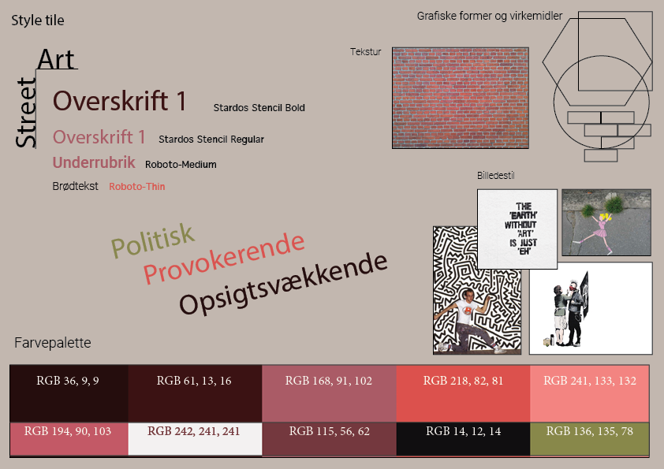
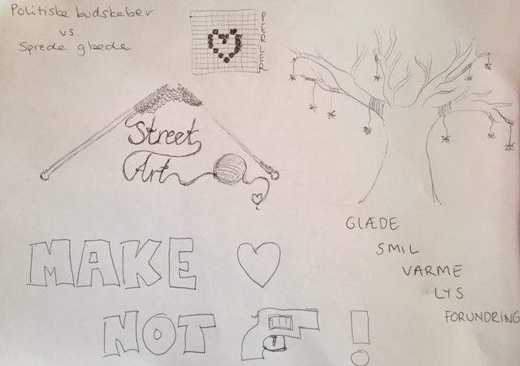
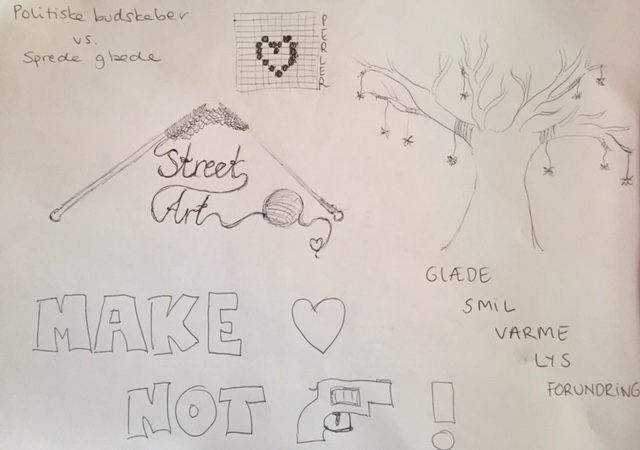

Stilartsite
Stilartsitet var noget af det første vi lavede på 1. semester. Det var under dette projekt, at vi blev introduceret for de mest grundlæggende programmer som vi har brugt op igennem 1. semester.
For at udføre stilartsitet arbejdede jeg i Brackets med html og css. Her bestod opgaven bl.a. i at bruge flexboks. Til illustrationerne og designdelen brugte jeg InDesign og Photoshop.
Personligt kendte jeg ikke det store til Street Art, som var den stilart jeg fik tildelt. Arbejdet med Street Art, og den viden jeg fik fra andre grupper der arbejdede med andre mere historiske stilarter, fik mig til at indse hvor meget tidligere grafiske udtryksformer og kunst i det hele taget, influerer design og medier i dag. Det var en øjenåbner for mig, at bl.a. valg af typografi kan signalere en hel stil og hvor troværdig det læste medie er, alene ud fra skriftvalg.
Street art har nærmest ingen grænser, når det kommer til udtryksformer. Eneste krav er, at det skal findes i gadebilledet. Street art er en stilart som udtrykker mange ting. Tit er der en politisk agenda bag værkerne, men ofte er det også blot en måde at skabe glæde og forundring, i det ellers så kedelige offentlige rum. Det var noget af det som inspirerede mig aller mest i arbejdet med mit stilartsite. Jeg elsker tanken om, at man kan sprede kærlighed og glæde, ved enkelte og små kunstværker.
Endeligt stilartsite

Inspiration til stilart-site og splash
 
